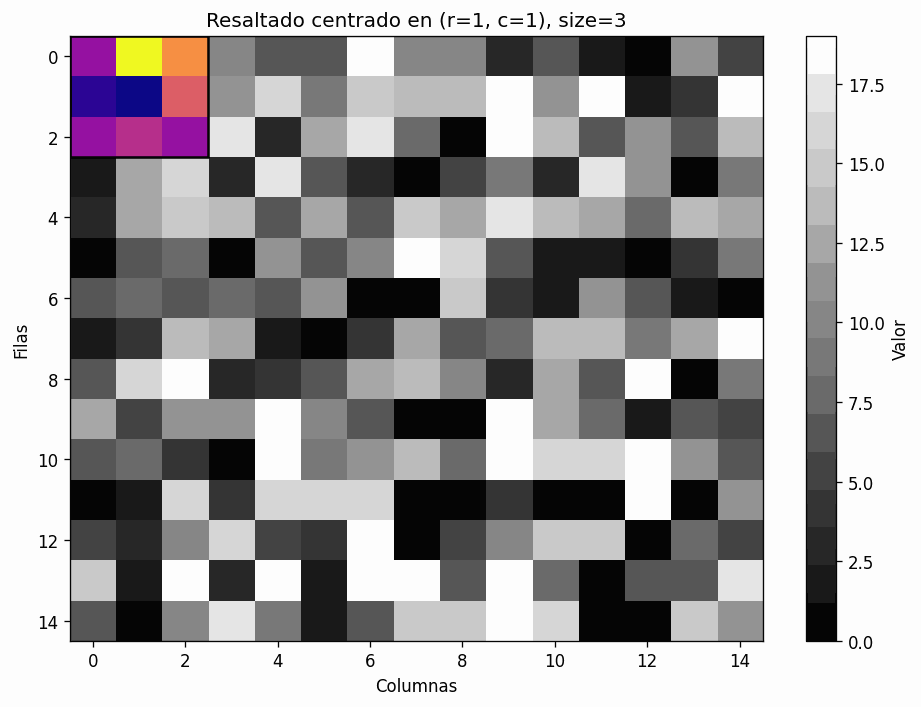
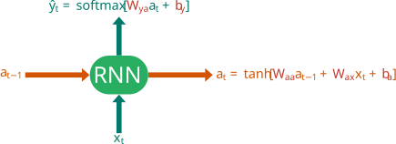
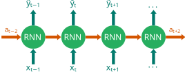
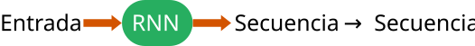
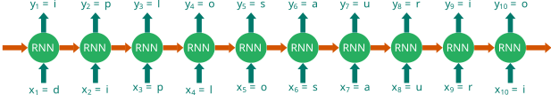
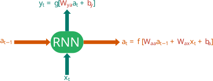

import torch
import torch.nn as nn
class SimpleCNN(nn.Module):
def __init__(self):
super(SimpleCNN, self).__init__()
# Feature Extraction
self.features = nn.Sequential(
nn.Conv2d(in_channels=1, out_channels=32, kernel_size=3, padding=1),
nn.ReLU(),
nn.MaxPool2d(kernel_size=2, stride=2),
nn.Conv2d(32, 64, kernel_size=3, padding=1),
nn.ReLU(),
nn.MaxPool2d(2, 2)
)
# Classifier
self.classifier = nn.Sequential(
nn.Flatten(),
nn.Linear(64 * 7 * 7, 128), # Assuming 28x28 input
nn.ReLU(),
nn.Linear(128, 10)
)
def forward(self, x):
x = self.features(x)
x = self.classifier(x)
return xRedes Neuronales Convolucionales & Redes Recurrentes
Regresión lineal múltiple, regresión logística y Redes Neuronales
Introduction
ImportanteMotivation
Standard Feedforward Networks (MLPs) fail to scale for high-dimensional data like images due to:
- Full Connectivity: Exploding parameter count.
- Spatial Invariance: Ignorance of local spatial topology.
Convolutional Neural Networks (CNNs) introduce:
- Local Connectivity: Neurons connect only to a local receptive field.
- Parameter Sharing: Same weights (filters) applied across the input.
- Equivariance: Translation of input results in translation of output.
The Convolution Operation
In the context of CNNs, the operation is technically a cross-correlation, but conventionally termed convolution.
Given an input image \(I\) and a kernel (filter) \(K\), the feature map \(S\) is defined as:

\[S(i, j) = (I * K)(i, j) = \sum_{m} \sum_{n} I(i+m, j+n) K(m, n)\]
Where: * \((i, j)\) are the pixel coordinates. * \((m, n)\) are the kernel offsets.
Hyperparameters
The spatial dimensions of the output feature map depend on:
- Filter Size (\(F\)): Receptive field dimensions (e.g., \(3 \times 3\)).
- Stride (\(S\)): Step size of the filter convolution.
- Padding (\(P\)): Zero-padding around the border to preserve dimensions.
Output Dimension Formula: Given input size \(W_{in} \times H_{in}\):
\[W_{out} = \frac{W_{in} - F + 2P}{S} + 1\]
Pooling Layers
Pooling provides invariance to small translations and reduces dimensionality (downsampling).
Max Pooling
Selects the maximum activation in the receptive field: \[y_{i,j,k} = \max_{(p,q) \in \mathcal{R}_{i,j}} x_{p,q,k}\]
Average Pooling
Calculates the arithmetic mean. Generally, Max Pooling performs better for identifying dominant features (edges, textures).
Activation Functions
Linear convolution is insufficient for approximating non-linear functions.
ReLU (Rectified Linear Unit): \[f(x) = \max(0, x)\]
- Sparsity: Activations \(< 0\) are zeroed out.
- Gradient Propagation: Mitigates vanishing gradient problem compared to Sigmoid/Tanh.
Variants: Leaky ReLU, ELU, GELU (Gaussian Error Linear Unit).
Architecture Overview
A typical CNN architecture follows a hierarchical pattern:
- Feature Extraction Block:
- [Conv \(\rightarrow\) ReLU \(\rightarrow\) Pooling] \(\times N\)
- Classification Head:
- Flattening
- Fully Connected Layers (Dense)
- Softmax (for multi-class classification)
\[P(y=j | \mathbf{x}) = \frac{e^{\mathbf{w}_j^T \mathbf{h} + b_j}}{\sum_{k=1}^K e^{\mathbf{w}_k^T \mathbf{h} + b_k}}\]
Backpropagation in CNNs
Training requires computing gradients w.r.t weights \(W\) using the Chain Rule.
For a convolution layer \(l\): \[\frac{\partial L}{\partial W^{(l)}} = \frac{\partial L}{\partial \text{out}^{(l)}} * \text{in}^{(l)}\]
Where the gradient is computed via convolution between the incoming error signal and the input activations from the previous layer.
Implementation: PyTorch Snippet
Recurrent Neuronal Network
¿Por qué RNNs?
Las redes neuronales tradicionales (MLP, CNN) asumen que las entradas y salidas son independientes.
El problema: ¿Cómo procesamos datos donde el orden importa?
- Traducción de idiomas (La gramática depende del contexto previo).
- Audio y Voz (La onda sonora es continua).
- Series de Tiempo (El valor de hoy depende de ayer).
- Genómica (Secuencias de ADN).
La Celda Recurrente (RNN Cell)
La diferencia fundamental es la memoria. La RNN procesa la entrada actual (\(x_t\)) considerando el estado anterior (\(a_{t-1}\)).

Formulación Matemática
Analicemos las ecuaciones clave utilizando el código de color:
\[ a_t = g_1(W_{aa}a_{t-1} + W_{ax}x_t + b_a) \]
\[ \hat{y}_t = g_2(W_{ya}a_t + b_y) \]
Nota
- \(\textcolor{#D35400}{a_t}\): Estado oculto (Hidden State). Es la “memoria” del paso \(t\).
- \(\textcolor{#C0392B}{W_{ax}, W_{aa}, W_{ya}}\): Pesos compartidos. Son los mismos para cada paso de tiempo.
- \(g_1\): Usualmente tanh o ReLU.
- \(g_2\): Usualmente Softmax (clasificación) o Lineal (regresión).
Desenrollando en el Tiempo (Unrolling)
Una RNN es simplemente la misma celda ejecutada múltiples veces. \(a_t\) pasa información de un paso al siguiente.

Arquitecturas Flexibles
Las RNN permiten procesar secuencias de longitudes variables en diferentes configuraciones.
Tipos:
- Many-to-Many (\(T_x = T_y\)): Clasificación de entidades nombradas (NER), Generación de texto.
- Many-to-One: Análisis de sentimiento, Clasificación de actividad.
- One-to-Many: Generación de música, Captioning de imágenes (Input = Imagen CNN).
- Many-to-Many (\(T_x \neq T_y\)): Traducción automática (Encoder-Decoder).
Retropropagación en el Tiempo (BPTT)
Para entrenar, calculamos el gradiente de la pérdida \(L\) respecto a los parámetros \(W\).
\[ \frac{\partial L}{\partial W} = \sum_{t} \frac{\partial L_t}{\partial W} \]
AdvertenciaEl Reto del Gradiente
Al multiplicar gradientes muchas veces (por la regla de la cadena a través del tiempo), estos pueden:
- Desvanecerse (Vanishing): La red olvida el pasado lejano. (Solución: LSTM/GRU).
- Explotar (Exploding): El entrenamiento diverge. (Solución: Gradient Clipping).
Resumen Visual

Conclusión: Las RNNs unifican el aprendizaje sobre datos secuenciales aprendiendo parámetros (\(W\)) que se comparten a través del tiempo.
Basic Concepts
Basic Concepts
NotaGeneral Schema
Let’s make a general structure of the problem

Basic Concepts
